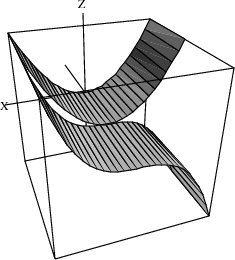

10.1 Drawing Ribbons Interactively¶
We begin our discussion of interactive graphics with the creation of a useful facility: plotting ribbons of two-graphs in three-space. Suppose you want to draw the two-dimensional graphs of n functions fi(x),1≤i≤n, all over some fixed range of x. One approach is to create a two-dimensional graph for each one, then superpose one on top of the other. What you will more than likely get is a jumbled mess. Even if you make each function a different color, the result is likely to be confusing.
A better approach is to display each of the fi(x) in three ribbon dimensions as a ribbon of some appropriate width along the y-direction, laying down each ribbon next to the previous one. A ribbon is simply a function of x and y depending only on x.
We illustrate this for fi(x) defined as simple powers of x for x ranging between -1 and 1.
Draw the ribbon for z=x2.
draw(x^2,x=-1..1,y=0..1)

Now that was easy! What you get is a wire-mesh rendition of the ribbon. That’s fine for now. Notice that the mesh-size is small in both the x and the y directions. FriCAS normally computes points in both these directions. This is unnecessary. One step is all we need in the y-direction. To have FriCAS economize on y-points, we re-draw the ribbon with option var2Steps==1.
Re-draw the ribbon, but with option var2Steps==1 so that only 1 step is computed in the y direction.
vp := draw(x^2,x=-1..1,y=0..1,var2Steps==1)
The operation has created a viewport, that is, a graphics window on your screen. We assigned the viewport to vp and now we manipulate its contents.
Graphs are objects, like numbers and algebraic expressions. You may want to do some experimenting with graphs. For example, say
showRegion(vp, "on")
to put a bounding box around the ribbon. Try it! Issue rotate(vp,-45,90) to rotate the figure -45 longitudinal degrees and 90 latitudinal degrees.
Here is a different rotation. This turns the graph so you can view it along the y-axis.
rotate(vp, 0, -90)
There are many other things you can do. In fact, most everything you can do interactively using the three-dimensional control panel (such as translating, zooming, resizing, coloring, perspective and lighting selections) can also be done directly by operations (see Chapter ugGraph for more details).
When you are done experimenting, say reset(vp) to restore the picture to its original position and settings.
Let’s add another ribbon to our picture—one for x3. Since y ranges from 0 to 1 for the first ribbon, now let y range from 1 to 2. This puts the second ribbon next to the first one.
How do you add a second ribbon to the viewport? One method is to extract the space component from the viewport using the operation subspacesubspaceThreeDimensionalViewport. You can think of the space component as the object inside the window (here, the ribbon). Let’s call it sp. To add the second ribbon, you draw the second ribbon using the option space==sp.
Extract the space component of vp.
sp := subspace(vp)
Add the ribbon for x3 alongside that for x2.
vp := draw(x^3,x=-1..1,y=1..2,var2Steps==1, space==sp)
Unless you moved the original viewport, the new viewport covers the old one. You might want to check that the old object is still there by moving the top window.
Let’s show quadrilateral polygon outlines on the ribbons and then enclose the ribbons in a box.
Show quadrilateral polygon outlines.
drawStyle(vp,"shade");outlineRender(vp,"on")
Enclose the ribbons in a box.
rotate(vp,20,-60); showRegion(vp,"on")
This process has become tedious! If we had to add two or three more ribbons, we would have to repeat the above steps several more times. It is time to write an interpreter program to help us take care of the details.